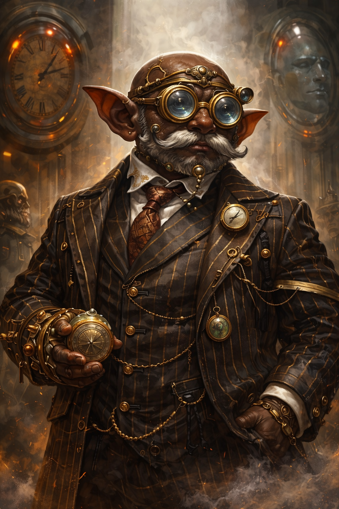
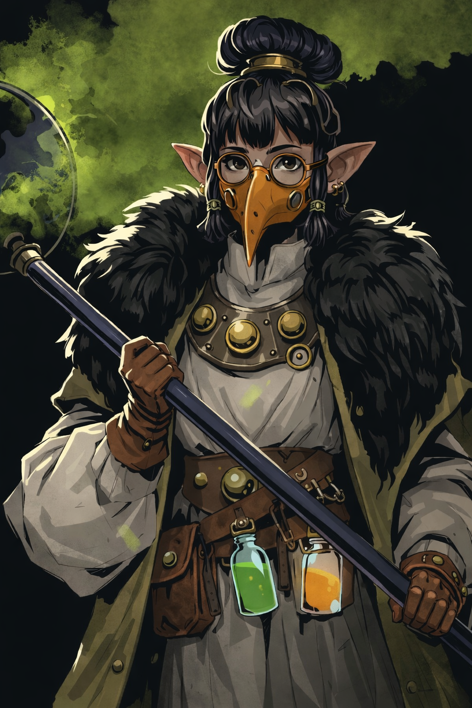
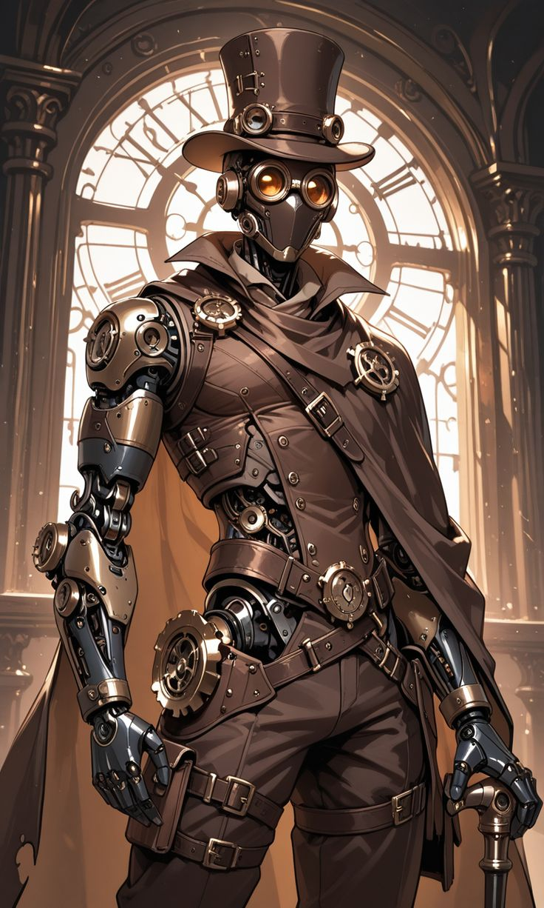

⚙️ República Industrial
Onde a ciência avança… e o progresso nunca para.

📜 Sobre a República
Na República Industrial, a ciência é a maior força de Zarton. Engrenagens, vapor e invenções substituem a magia, enquanto os deuses são vistos como ideias ultrapassadas. Cidades imensas, máquinas complexas e tecnologias avançadas moldam o cotidiano da população. Aqui, o conhecimento é poder — e a inovação define o futuro. Mas por trás desse avanço, existe um contraste evidente: enquanto alguns vivem no topo do progresso, outros pagam o preço para mantê-lo funcionando.
🏛️ Política
A República Industrial é governada por um conselho formado pelas famílias mais ricas e influentes do país. Cada uma dessas famílias controla uma das principais cidades, concentrando poder econômico, tecnológico e político. Não existe um líder único — decisões são tomadas por meio de acordos, disputas internas e interesses estratégicos. A posição social depende tanto de riqueza quanto de intelecto. Grandes mentes podem ascender na sociedade, mas o sistema ainda favorece aqueles que já estão no topo. Enquanto isso, a desigualdade social cresce, especialmente nas regiões industriais mais pesadas.
📍 Locais Importantes
- • Engrenor — A capital da República. Uma cidade monumental movida por mecanismos, com pontes móveis, autômatos e sistemas automatizados. As camadas superiores são limpas e sofisticadas, enquanto as inferiores sustentam toda a estrutura.
- • Pulmões — Centro médico e científico do reino. Referência em medicina avançada e próteses mecânicas, onde ciência e corpo se encontram.
- • Latão — O coração industrial. Repleta de fábricas e trabalhadores, é uma cidade marcada por vapor constante, ar tóxico e condições difíceis. Também é onde a desigualdade e a criminalidade são mais visíveis.
👥 Personagens Importantes

⚙️ Victor Kael
Representante de Engrenor
Um dos líderes mais influentes da República Industrial, Victor atua nos bastidores moldando decisões que impactam todo o continente.
Elegante e calculista, acredita que o progresso deve ser guiado apenas por aqueles capazes de sustentá-lo — custe o que custar.
Poucas coisas acontecem na República… sem que ele saiba.

🧠 Camila Virex
Representante de Pulmões
Uma das maiores mentes médicas de Zarton, Camila ultrapassou os limites da ciência, criando tratamentos e próteses que rivalizam com a própria magia.
Seus métodos, porém, são questionados. Para ela, resultados importam mais que processos.
Nem todos querem saber… o que foi necessário para seus avanços.

🤖 Orion Latão
Representante de Latão
Orion não é humano — foi criado para governar com precisão absoluta, livre das limitações físicas e emocionais.
Executa decisões políticas e estratégicas com eficiência perfeita, enquanto seu criador permanece nas sombras… observando.
Ele governa sem emoções… ou pelo menos, é isso que dizem.